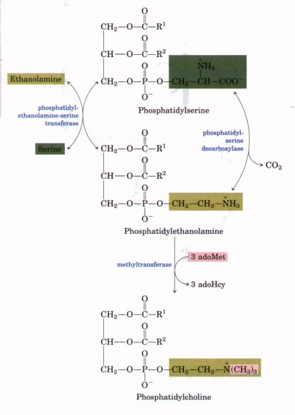
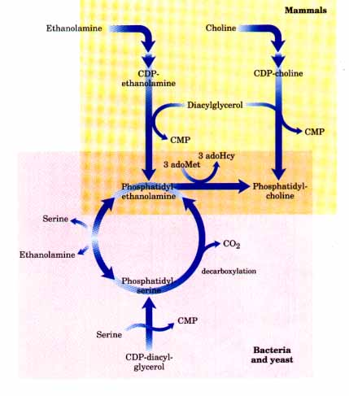
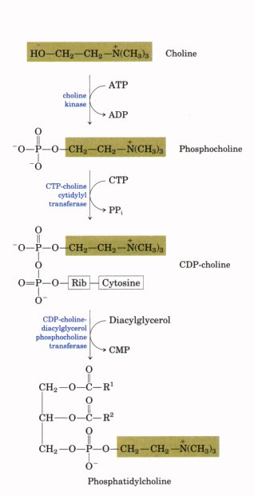
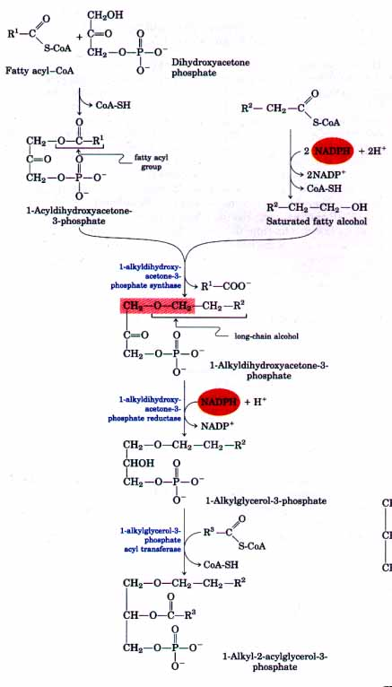
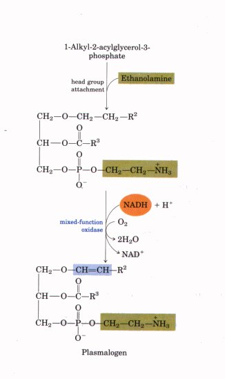
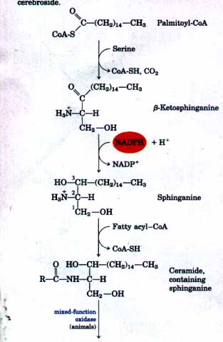
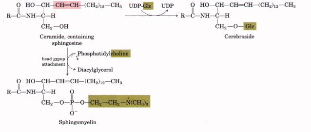

In yeast as in bacteria, phosphatidylserine can be produced by condensation of CDP-diacylglycerol and serine, and phosphatidylethanolamine can be synthesized from phosphatidylserine in the reaction catalyzed by phosphatidylserine decarboxylase (Fig. 20-25). An alternative route to phosphatidylserine is a head group exchange reaction,in which free serine displaces ethanolamine. Phosphatidylethanolamine may also be converted to phosphatidylcholine (lecithin) by the addition of three methyl groups to its amino group. All three methylation reactions are catalyzed by a single enzyme (a methyltransferase) with S-adenosylmethionine as the methyl group donor (see Fig. 17-20). |
 Figure 20-25 The "salvage" pathway from phosphatidylserine to phosphatidylethanolamine and phosphatidylcholine in yeast. Phosphatidylserine and phosphatidylethanolamine are interconverted by a reversible head group exchange reaction. In mammals, phosphatidylserine is derived from phosphatidylethanolamine by a reversal of this reaction. adoHcy represents S-adenosylhomocysteine. |
| In mammals, phosphatidylserine is not
synthesized from CDPdiacylglycerol; instead, it is
derived from phosphatidylethanolamine via the head group
exchange reaction shown in Figure 20-25. In mammals,
synthesis of all nitrogen-containing phospholipids occurs
by strategy 2 of Figure 20-22: phosphorylation and
activation of the head group followed by condensation
with diacylglycerol. For example, choline is reused
("salvaged") by being phosphorylated then
converted into CDP-choline by condensation with CTP. A
diacylglycerol displaces CMP from CDP-choline, producing
phosphatidylcholine (Fig. 20-26). An analogous salvage pathway converts ethanolamine obtained in the diet into phosphatidylethanolamine. In the liver, phosphatidylcholine is also produced by methylation of phosphatidylethanolamine using S-adenosylmethionine, as described above. In all other tissues, however, phosphatidylcholine is produced only by condensation of diacylglycerol and CDP-choline. The pathways to phosphatidylcholine and phosphatidylethanolamine in various organisms are summarized in Figure 20-27.  |
 Figure 20-26 The pathway for phosphatidylcholine synthesis from choline in mammals tstrategy 2, Fig. 20-22). The same strategy is used for salvaging ethanolamine in phosphatidylethanolamine synthesis. Figure 20-27 Summary of the pathways to phosphatidylcholine and phosphatidylethanolamine. Note that the conversion of phosphatidylethanolamine to phosphatidylcholine in mammals occurs only in the liver. |
The biosynthetic pathway to ether lipids, including plasmalogens and the platelet-activating factor (see Fig. 9-8), involves the displacement of an esterified fatty acyl group by a long-chain alcohol to form the ether linkage (Fig. 20-28). Head group attachment follows, by mechanisms essentially like those for the common ester-linked phospholipids. Finally, the characteristic double bond of plasmalogens is introduced by the action of a mixed-function oxidase similar to that responsible for desaturation of fatty acids (Fig. 20-14).
 |
Figure 20-28 Synthesis of the ether linkage (shaded in red) in ether lipids, and the formation of plasmalogens. The intermediate 1-alkyl-2-acylglycerol-3-phosphate is the ether analog of phosphatidate. Mechanisms for attaching head groups to ether lipids are essentially the same as for their ester-linked analogs. The characteristic double bond of plasmalogens (shaded in blue) is introduced in a final step by a mixed-function oxidase system similar to that shown in Fig. 20-14.  |
The biosynthesis of sphingolipids occurs in four stages: (1) synthesis of the 18-carbon amine sphinganine from palmitoyl-CoA and serine; (2) attachment of a fatty acid in amide linkage to form ceramide; (3) desaturation of the sphinganine moiety to form sphingosine; and (4) attachment of a head group to produce a sphingolipid such as a cerebroside or sphingomyelin (Fig. 20-29). The pathway shares several features with the pathways leading to glycerophospholipids: NADPH provides reducing power and fatty acids enter as their activated CoA derivatives. In cerebroside formation, sugars enter as their activated nucleotide derivatives. Head group attachment in sphingolipid synthesis has several novel aspects. Phosphatidylcholine, rather than CDP-choline, serves as the donor of phosphocholine in the synthesis of sphingomyelin from the ceramide (Fig. 20-29). In glycolipids, the cerebrosides and gangliosides (see Fig. 9-9), the head group is a sugar, attached directly to the C-1 hydroxyl of sphingosine in glycosidic linkage, rather than through a phosphodiester bond; the sugar donor is a UDP-sugar (UDP-glucose or UDP-galactose).
 |
Figure 20-29 Biosynthesis of sphingolipids. First, the condensation of palmitate and serine yields sphinganine, which is then acylated to form a ceramide. In animals, a double bond (shaded in red) is then created by a mixed-function oxidase, before the final addition of a head group: phosphatidylcholine, to form sphingomyelin; or glucose, to form a cerebroside. |
|  |
|
After their synthesis on the smooth endoplasmic reticulum, the polar lipids, including the glycerophospholipids, sphingolipids, and glycolipids, are inserted into different cell membranes in different proportions. The mechanism by which specific lipids are targeted for insertion into specific intracellular membranes is not yet understood. Because membrane lipids are insoluble in water, they cannot simply diffuse from their point of synthesis (the endoplasmic reticulum) to their point of insertion. Instead, they are delivered in membrane vesicles that bud from the Golgi complex then move to and fuse with the target membrane (see Figs. 2-10, 10-14). There are also cytosolic proteins that bind phospholipids and sterols and carry them from one cell membrane to another and from one face of a lipid bilayer to the other. The combined action of transport vesicles and these proteins (and perhaps other proteins yet to be discovered) produces the characteristic lipid composition of each organelle membrane (see Table 10-2).